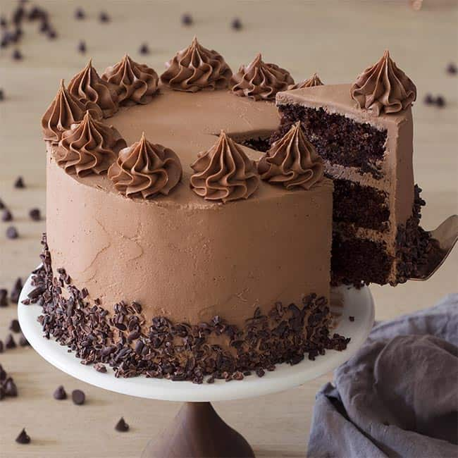

choclate cake recipe :
the ingredients needed :
- 140 g black chocolat
- 130 g butter
- 140 g sugar
- 4 eggs
- 60 g flour
- baking powder
- 80 g almonds
follow these steps :
- Preheat the oven to 180°C.
🔥
- Butter the cake pan.
🧈
- Separate the yolks from the whites of the eggs.
🥚
- Break the chocolate into squares.
🍫
- cut the butter into cubes and place everything in a bowl.
- Melt it in a double boiler or in the microwave .
- Mix and add the egg yolks and sugar.
-
Mix. Then add the flour, baking powder and almond powder. Mix again.
- Beat the egg whites.
-
Add them to the chocolate preparation, stirring gently.
🤩
- Pour into the cake pan and put in the oven.
- Reduce the temperature to 150 ° C and cook for 50 minutes
🍴
have a good meal :)
the desert i chose is choclate cake because it's so delicious !
look how yummy !
-
 >
>

- 
A combination of sweet, sour, and bitter, in the cake texture with creamy and crunchy in it's icing. None over powering but mixing together to make one of the most amazing tastes ever made.